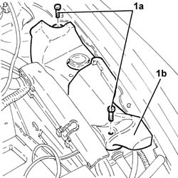
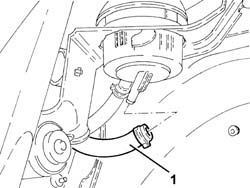
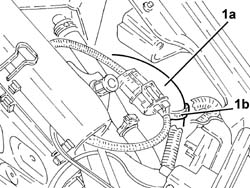
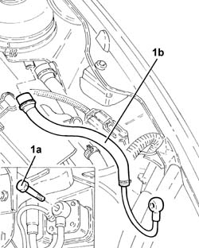
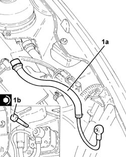
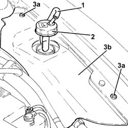
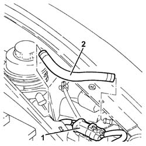

2127C18 pipe from hydraulic circuit fluid reservoir to hydraulic speed selection drive pump - r r
- Path
- Procedures > 21 GEARBOX > 2127 ELECTRO-HYDRAULIC SELECTION. GEARBOX EXTERNAL. CONTROLS > 2127C hydraulic gear selection system > 2127C18 pipe from hydraulic circuit fluid reservoir to hydraulic speed selection drive pump - r r
- Kind
- repair procedure (removal / refitting; the operation number is the code)
- Applies to
- engines: 2.0 TS, 3.2 V6; all production periods
- Interactive page
- https://sloeber94.github.io/elrnDB-a147/en/#/3025147
Applies to: engines: 2.0 TS; all production periods; only with equipment: Cambio robotizzato
 Removing
Removing
 Refitting
RefittingPosition the vehicle on the ramp.
Proceed with the removal 5530B10 battery - r+r .
Proceed with the removal 4450B12 front or rear wheels (two) - r+r .
Proceed with the removal 7055B42 Additional FRONT WHEEL ARCH (one), left or right - R.R. (Right and left sides).
Proceed with the removal 7055B54 under-engine guard - r r .
Proceed with the removal 7210E10 R.R. CENTRE PILLAR .
Undo electro-hydraulic selection gearbox hydraulic circuit fluid reservoir cap and drain the reservoir using a suitable syringe.
1. Undo bolts (1a) and remove protection (1b).

Applies to: engines: 2.0 TS; all production periods; only with equipment: Cambio robotizzato
1. Working via the wheel arch, disconnect the pipe between the hydraulic circuit fluid reservoir and the electro-hydraulic gear selection electric pump, reservoir side.

Applies to: engines: 2.0 TS; all production periods; only with equipment: Cambio robotizzato
1. Release the pipe from the hydraulic circuit fluid reservoir to the electro-hydraulic gear selection electric pump (1a) from the fastening on the support.

Applies to: engines: 2.0 TS; all production periods; only with equipment: Cambio robotizzato
1. Undo the connector (1a) and rmeove the pipe between the hydraulic circuit fluid reservoir and the electro-hydraulic gear selection electric pump (1b).

Applies to: engines: 2.0 TS; all production periods; only with equipment: Cambio robotizzato
Refitting
Removing1. Place the pipe from the hydraulic circuit fluid reservoir to the electro-hydraulic gear selection electric pump (1a) back in its housing and tighten the connector (1b) to the recommended torque.
 | Fastening | Component | Ø | Value (daNm) |
|---|---|---|---|---|
1b | - | - | - | - |

Applies to: engines: 2.0 TS; all production periods; only with equipment: Cambio robotizzato
Secure the pipe from the hydraulic circuit fluid reservoir to the electro-hydraulic gear selection electric pump to the fastening on the support.
Working via the wheel arch, connect the pipe between the hydraulic circuit fluid reservoir and the electro-hydraulic gear selection electric pump, reservoir side.
Place the protection back in its housing and secure it using the bolt.
Check the level of the fluid in the electro-hydraulic selection gearbox hydraulic system and top it up, if necessary 2127C04 ELECTROHYDRAULIC selection gearbox hydraulic system FLUID - Check level and top up if necessary. .
Bleed the air from the electro-hydraulic gearbox hydraulic system 2127C06 Electro-hydraulic selection manual gearbox HYDRAULIC SYSTEM - Bleeding air .
Proceed with the refitting 7210E10 R.R. CENTRE PILLAR .
Proceed with the refitting 7055B54 under-engine guard - r r .
Proceed with the refitting 7055B42 Additional FRONT WHEEL ARCH (one), left or right - R.R. (Right and left sides).
Proceed with the refitting 4450B12 front or rear wheels (two) - r+r .
Proceed with the refitting 5530B10 battery - r+r .
Remove the car from the ramp.
Applies to: engines: 3.2 V6; all production periods; only with equipment: Cambio robotizzato
Removing
Refitting1. Disconnect the breather pipe from the electro-hydraulic selection gearbox hydraulic circuit fluid reservoir cap.
2. Undo the electro-hydraulic selection gearbox hydraulic circuit fluid reservoir cap and remove it.
Drain the electro-hydraulic selection gearbox hydraulic circuit fluid reservoir using a suitable syringe.
3. Undo the bolts (3a) and remove the protection (3b).

Applies to: engines: 3.2 V6; all production periods; only with equipment: Cambio robotizzato
1. Release the electrical connection for the electro-hydraulic gear selection system electric pump from the support.
2. Loosen the fixing bands and remove the pipe between the hydraulic circuit fluid reservoir and the electro-hydraulic gear selection electric pump.

Applies to: engines: 3.2 V6; all production periods; only with equipment: Cambio robotizzato
Refitting
RemovingPlace the pipe between the hydraulic circuit fluid reservoir and the electro-hydraulic gear selection electric pump back in its housing and fix it using the bands.
Fix the electrical connection for the electro-hydraulic gear selection system electric pump to the mounting.
Place the protection back in its housing and secure it using the bolt.
Place the electro-hydraulic selection gearbox hydraulic circuit fluid reservoir cap back in its housing.
Connect the breather pipe to the electro-hydraulic selection gearbox hydraulic circuit fluid reservoir cap.
.Proceed with refitting 0010T47 hydraulic system fluid for gearbox with hydraulic selection check level and top up if necessary .
.Proceed with refitting 0010T48 hydraulic system for gearbox with hydraulic selection bleed air .
Topics linked from this page (9)
- 0010T47 hydraulic system fluid for gearbox with hydraulic selection check level and top up if necessary
- 0010T48 hydraulic system for gearbox with hydraulic selection bleed air
- 2127C04 ELECTROHYDRAULIC selection gearbox hydraulic system FLUID - Check level and top up if necessary.
- 2127C06 Electro-hydraulic selection manual gearbox HYDRAULIC SYSTEM - Bleeding air
- 4450B12 front or rear wheels (two) - r+r
- 5530B10 battery - r+r
- 7055B42 Additional FRONT WHEEL ARCH (one), left or right - R.R.
- 7055B54 under-engine guard - r r
- 7210E10 R.R. CENTRE PILLAR